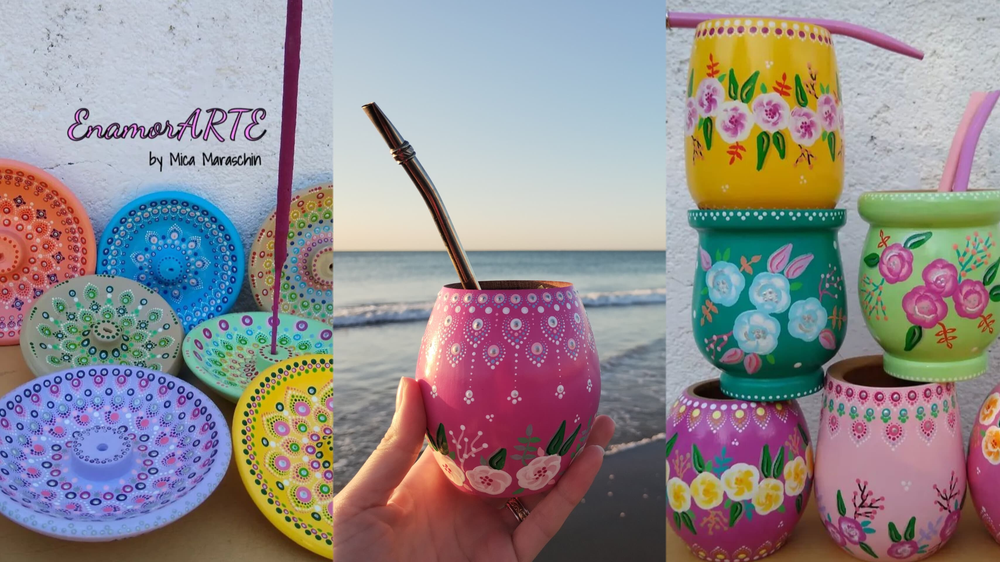

Bienvenidos
Este es un emprendimiento creado por Micaela Maraschin. Lo que hacemos es pintar Mates de un estilo muy original y diferente a lo que conoces. Somos de Villa Carlos Paz y nos puedes encontrar en el paseo de los artesanos para conocer nuestros productos y darte con el gusto de llevarte lo que desees.
Testimonios
Mates pintados de forma artesanal.